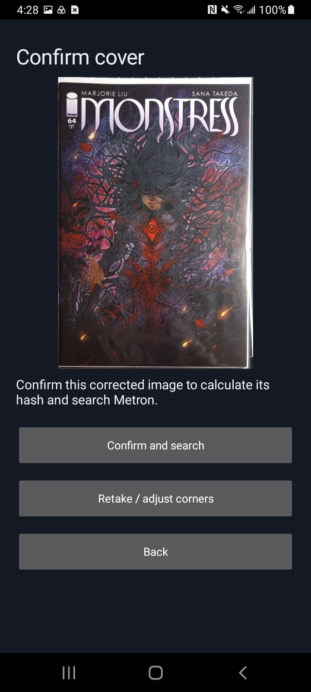
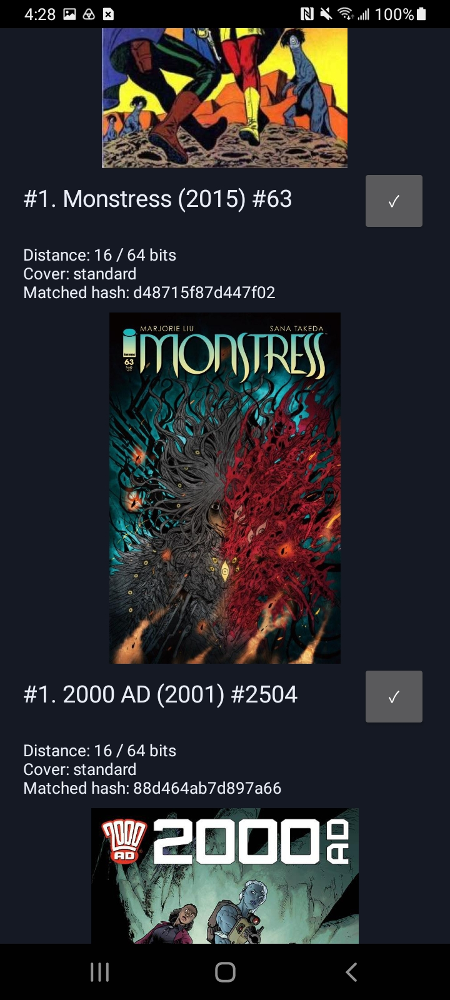
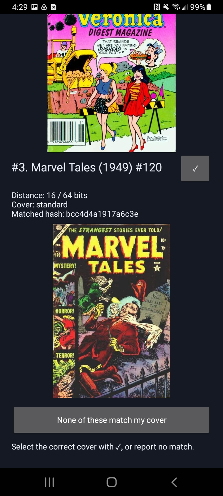
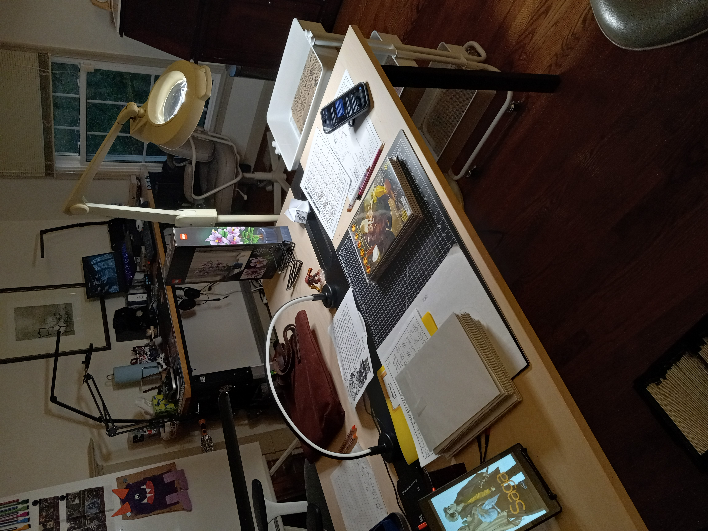

This efficacy test began with just over 40,000 cover hashes in a local instance of Metron, representing approximately 21% of the metron.cloud issue count reported at the time (187,642 issues). The local search corpus contained 40,000 issues and 40,112 cover hashes, including variants.
Scanning was performed using a custom Android client named CPHTest (Cover Perceptual Hash Test), which was built for this purpose in the experimental Metron branch. Once configured with an API key for a local network instance, the client implements a simple workflow:
The user captures a photo of the target cover.
The user may optionally rotate the image and adjust the automatically detected bounding box.
The client uses the bounding box to adjust for perspective, creating a cropped, rectangular capture of the cover, which the user reviews.
The user confirms the corrected image and taps the button to search. A perceptual hash is computed from this image.
The client queries a new API endpoint with the computed perceptual hash.
The database compares the hash with its stored cover hashes and returns the top eight closest distinct comics. Results use competition ranking: if the closest matches differ by 8, 8, and 12 bits, they are ranked 1, 1, and 3.
The client receives this data and displays the matches to the user.
The user taps the checkmark beside the correct match, or the button at the bottom indicating that none of the top eight images are correct.
The client calls a temporary “notetaker” API endpoint created specifically for this experiment, which captures data about the match or lack thereof for analysis. This includes success or failure, the ranking of the matching comic, and the recorded performance data.
Client Workflow
The screenshots illustrate corner editing, corrected-image review, search confirmation, and the result-feedback controls. They show different scans rather than a single continuous attempt.
Corner adjustment: automatically detected corners can be repositioned before applying the crop (Monstress #63).Corrected-image review: the capture can be discarded or edited again before continuing (Monstress #64).

Search confirmation: the corrected cover is confirmed before hash computation and the API request (Monstress #64).

Match selection: the checkmark records the correct comic; equal distances share a competition rank (Monstress #63 shown at rank #1).

Negative feedback: “None of these match my cover” records an unsuccessful attempt.
Testing Environment
A consistent environment was used for testing, consisting of a worktable with a black mat marked with 1-inch grid squares and a single powerful LED worklamp.

The testing environment: gridded black work mat, comic covers, test phone, and LED worklamp.
Test Subjects
The tester scanned 139 comics from their collection. Care was taken in advance to ensure that the test subjects were represented in the local database. One unavailable reference cover was identified after the fact and its trial was excluded, leaving 138 eligible comic trials. The exclusion and subsequent collection-context findings are documented in Validation and Audit; later identification alone does not establish catalog presence at scan time.
Scanning Policy
The first scan was principally a “devil may care” scan. The client’s automatic capture, triggered when the bounding box held steady for a moment, was used with minimal editing to the maximum extent possible, simulating a user’s likely expectations of this tool.
The image was always edited to correct rotation on the first scan if the phone’s accelerometer caused an erroneous upside-down scan.
The automatically detected bounding-box corners were sometimes adjusted on the first scan if detection resulted in an incomplete capture of a corner or excessive warping. This sometimes happened with dark covers: low contrast between the cover and background made automatic corner detection less reliable.
If the first scan successfully identified the comic, the tester proceeded immediately to the next comic.
If the first scan did not successfully identify the cover, a second scan was attempted.
The tester always adjusted the bounding-box corners on the second attempt to ensure an ideal crop.
The tester proceeded to the next comic regardless of whether the second scan was successful.